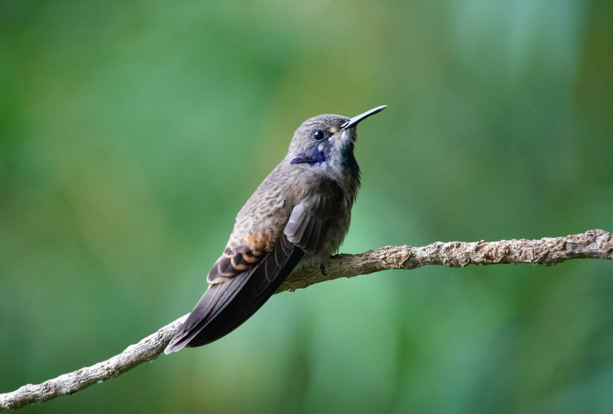

Brown Violetear
Colibri delphinae (Lesson, RP, 1839)
Spanish: Colibrí Pardo
The Brown Violetear (Colibri delphinae) is a hummingbird in the subfamily Polytminae (mangoes). It weighs about 6.4 g and its bill is 19.0 mm long. It lives in 15 countries, including Colombia, Ecuador, Costa Rica, Venezuela and Peru. Its IUCN Red List status is Least concern, with a decreasing population.
See it in the explorer eBird page ↗
At a glance
- Weight
- 6.4 g, about 6 paperclips
- Bill
- 19.0 mm
- Lives in
- Forest
- Moves
- Stays put all year
- Red List status
- Least concern, decreasing
Its place in the family
- Family Trochilidae hummingbirds
- Subfamily Polytminae mangoes
- Genus Colibri violetears
Where it lives · 16 countries
- Colombia
- Ecuador
- Costa Rica
- Venezuela
- Peru
- Panama
- Trinidad and Tobago
- Honduras
- Belize
- Brazil
- Nicaragua
- Bolivia
- Guatemala
- Guyana
- Suriname
- El Salvador rare visitor
Others in the genus Colibri
- Sparkling Violetear Colibri coruscans
- Mexican Violetear Colibri thalassinus
- White-vented Violetear Colibri serrirostris
- Lesser Violetear Colibri cyanotus
Sources
Names: eBird/Clements Checklist (Cornell Lab of Ornithology). Groups: Dickinson & Remsen (2013) and McGuire et al. (2014). Weight, bill, habitat and movement: AVONET (Tobias et al. 2022, CC BY 4.0). Countries: BirdLife International DataZone, checked against eBird records via GBIF. Red List status and trend: BirdLife International, the IUCN Red List authority for birds.